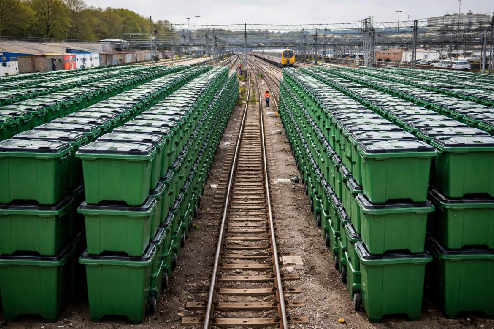

The Smart Railway Waste Collection and Management System is a conceptual engineering solution designed to address the problem of waste accumulation along railway tracks. The system aims to collect passenger-generated waste directly from train coaches and store it in designated containers for proper disposal at railway stations.
This concept focuses on improving environmental cleanliness, reducing track-side pollution, and promoting sustainable waste management practices in railway transportation.
A significant amount of plastic bottles, food wrappers, paper cups and other waste materials are discarded from moving trains. This leads to environmental pollution, increased maintenance costs and unhygienic conditions along railway corridors.
Passengers dispose waste into designated collection points inside the train coach. The waste is transported through a controlled collection mechanism into a storage compartment integrated within the train. At railway stations, the collected waste can be removed and sent for recycling or disposal.
The concept can be further enhanced through IoT-based monitoring, automated waste segregation and smart sensors for real-time waste level detection. These improvements can contribute to intelligent and sustainable railway transportation systems.
← Back to Portfolio